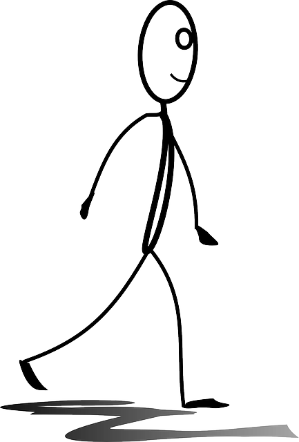

I grew up in a small mid-Michigan farm town.
Both my parents were public school teachers.
I loved to read and explore the forest around our house.
We didn't use a lot of technology.

I grew into a teenager who loved to make things.
I made music with a lot of different instruments.
I wrote stories which seemed a lot better at the time.
When I was a month away from graduating, some friends in engineering went to a one-day coding workshop. I tagged along.
I loved it so much that I decided I wanted to do it more.
I dug into Harvard's CS50. I worked through FreeCodeCamp.
I decided I wanted to build things with code as a career, but I couldn't afford another four year degree.
I wanted structure and guidance, because the world of technology was fairly new to me.
I did some research and decided to go to Lambda School, which is an full-time 8 month technical academy somewhere between a bootcamp and a formal education.
In my first three months of Lambda, I did these things:
- Comprehensive implementation of modern JavaScript environments and tooling (ES6+)
- Detailed study and implementation of data structures and algorithms
- Implement responsive web pages with semantic HTML5 & modern CSS3 (such as flexbox)
- Develop Single Page Applications (SPAs) with ES6+, React, Redux, and webpack
- Build various backend RESTful APIs backed by NoSQL and relational databases (MongoDB, MySQL)
- Implement authentication workflows using stateless JWTs, cookie-based systems, and third-party OAuth providers
- Test both front-end and back-end JavaScript applications with tooling such as Jest
After I finished the first three months, I applied to be a Project Manager for the incoming class of students so that I could gain leadership experience and solidify my knowledge of the material.
Instead, I ended up as Section Lead, a full-time role I'm currently working in. On a daily basis, I:
- Oversee 18 Project Managers and 129 students
- Audit code reviews to ensure quality feedback is provided to students
- Work closely with instructors to improve curriculum and lessons
- Lead daily stand-ups for Project Managers
- Identify and organizing support for struggling students
- Work with students and Project Managers to evaluate and debug code on a daily basis
- Continue side projects so that I keep progressing in my abilities
I get to read lots of code every day, and after work I write my own, build things I enjoy, and learn about new technologies.
I will be in this role until April 19th. After that, I'll start on my Lambda Internship where I'll work with a small team to create a market-ready product.
After my internship, I'll dive into the CS curriculum, where I'll study things like:
- Algorithms
- Data Structures
- Computer Architecture
- Python
- C
- Django
I love being with Lambda, but I'm also excited start working a team. For now, you can check out some of my projects below.